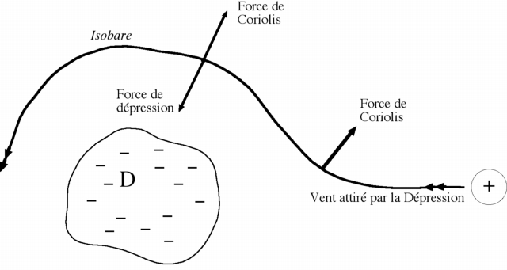
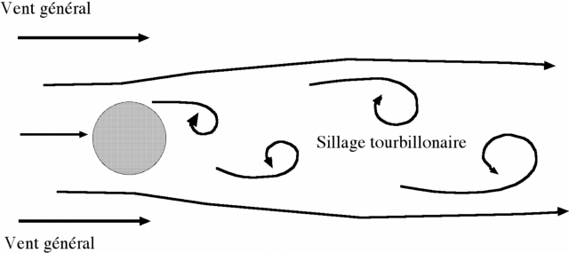
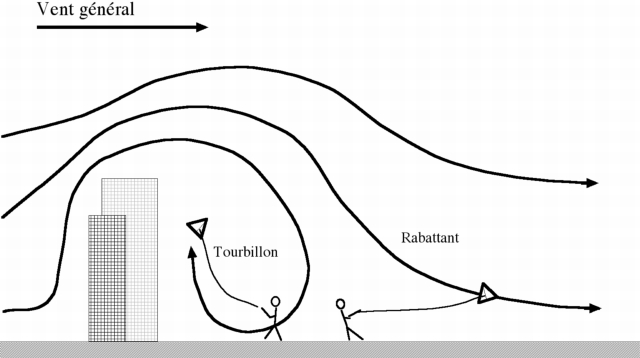
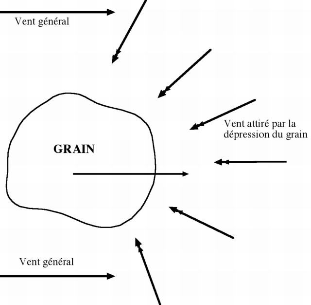

Le vent est le souffle d'Eole dans la mythologie grecque. Pour être plus pratique, le vent est un déplacement d'air d'une certaine ampleur, avec des conséquences très variées, de la marine à voile aux éoliennes, des néfastes tempêtes aux moussons bienfaitrices.
Pour ce qui nous concerne, il permet à la plupart des cerfs-volants de rester en vol, bien que certains fous fassent du cerf-volant Indoor !
Vent général
Le vent général (par opposition aux vents locaux) se déplace basiquement des hautes pressions (anticyclones) vers les dépressions. Mais la "force de Coriolis" liée à la rotation de la Terre vient compliquer les choses : dans l'hémisphère nord, elle pousse vers leur droite les corps en mouvement (trains, obus, et molécules d'air) en fonction de leur vitesse. Aussi le vent n'arrive jamais au centre de la dépression, mais s'enroule autour sur un cercle où l'aspiration de la dépression est égale à la force de Coriolis. Il suit donc des courbes d'égale pression ou isobares.

Plus les isobares (figurées sur les cartes météo des pressions) sont rapprochées, plus la différence de pression est forte, plus la force de Coriolis opposée doit être forte et donc plus le vent est rapide.
Cette disposition permet aussi une grossière prévision météo de terrain symbolisée par la règle DDDD en aviation : "Dépression Devant, Dérive Droite". Pour nous, recette pratique, si nous recevons le vent de la gauche, la dépression sera devant nous.
Le frottement sur le sol crée de la turbulence et diminue la vitesse du vent et donc la force de Coriolis à ce niveau : le vent se dirige plus "vers" la dépression. Aussi, quand on monte, le vent qui tourne "en rond" autour de la dépression, s’oriente donc plus à droite qu’au sol, dans notre hémisphère. En conséquence, le cerf-volant volera plus à droite en altitude qu'au sol. Il tournera progressivement au cours d'une montée.
Vent local
Le vent est soumis à toutes sortes d'aléas locaux : obstacles, vents locaux comme la brise de mer, vents de pente en montagne, et "ascendances thermiques" ou "thermiques" appelés "pompes" chez les planeurs. Le vent donné par la météo n'en tient pas compte en général et peut donc être très inexact, en particulier sur nos plages favorites...
La Brise de Mer est causée par l'ensoleillement : la mer se réchauffe au soleil moins vite que la terre par suite de la réflectivité de sa surface, et du brassage et de l'inertie thermique de la masse d'eau. L'air s'échauffe donc plus au-dessus de la terre, monte, et crée une dépression relative qui engendre la brise de mer.
Notons que, contrairement à une croyance très répandue, même chez les marins, l'effet de la marée est nul, je me suis fait confirmer ce point par un météorologue officiel.
La brise de mer s'établit progressivement dans la matinée (disons vers 11 h typiquement), mais plus tard, voire pas du tout, en fonction de l'ensoleillement et de la force d'un vent de terre général préexistant. Plus froide, elle se glisse sous l’air de terre plus chaud et s'établit donc d'abord au niveau du sol, s'épaississant petit à petit en gagnant de l'altitude. Ceci permet des situations amusantes où des cerfs-volants volent dans un sens en altitude et en sens opposé près du sol ! D’autant plus que l’air de la brise de mer regagne le large en altitude! Cette situation peut durer toute la journée si on monte assez haut. Le passage de l'une à l'autre altitude peut être délicat pour le vol !
La force de la brise de mer est fonction de l'ensoleillement. Elle peut changer assez rapidement si le ciel se couvre. Si le vent général est de terre, cela peut amener un renversement perçu de 180° très rapide, catastrophique pour nos machines !
Par contre, une brise de mer bien établie crée un vent bien lisse, régulier et pas trop fort, idéal pour le cerf-volant.
La nuit, la brise de mer est remplacée par une brise de terre, la mer restant plus longtemps chaude que la terre après le crépuscule. Le vol de nuit est souvent perturbé par ce renversement... Mais, une fois la renverse établie, la brise de terre de nuit, plus faible que la brise de mer, n’est pas perturbée par les thermiques (voir plus bas), elle est donc assez lisse et peut permettre un bon vol avec du léger.
Obstacles
Le vol, même sur une plage, est souvent perturbé par des obstacles : collines, immeubles, forêts, barnums. Il faut souvent monter (parfois difficilement) nettement plus haut que l'obstacle pour s'affranchir des perturbations qu’il crée et de l’affaiblissement les accompagnant.
Rencontrant un obstacle, le vent peut le contourner horizontalement, ou verticalement.
Si le contournement est horizontal, l'obstacle crée le plus souvent en aval des tourbillons alternés : le vent, toujours turbulent, nous vient alternativement de la droite et de la gauche de l'obstacle. Ces tourbillons alternent avec une fréquence fonction de la taille de l'obstacle.

Sur une colline, ils obligent à changer périodiquement la direction de vol, avec une grande instabilité de la force.
A plus petite échelle, sur une ligne bien tendue les tourbillons réagissent sur la ligne avec une fréquence audible, c’est la "musique éolienne". La note est plus haute quand le fil est tendu (comme sur un violon) mais sa hauteur ne dépend pas de la longueur de ligne. Les modulations du son, qui suivent celles du vent font le charme de cette musique.
Si l'obstacle est étendu en largeur, le vent le contourne verticalement. Derrière l'obstacle se forme une zone turbulente où le vent moyen est affaibli. Il peut aussi être très perturbé si un tourbillon se forme, le vent remontant alors le long de l'obstacle. S'en éloigner permet de retrouver un vent meilleur. On peut rencontrer un phénomène surprenant quand on s'éloigne un peu des turbulences : le cerf-volant tire fort, mais reste à une altitude faible : c'est qu'il est dans le "rabattant", le vent relativement peu perturbé mais qui redescend en aval de l'obstacle (se rencontre souvent devant l’hôpital de Berck par vent de terre).

Le tourbillon derrière l'obstacle peut se présenter en biais, si, par exemple, une rangée d'immeubles le long de la mer (comme à Dieppe) est frappée obliquement par le vent. Il se forme alors un "tire-bouchon", un rouleau, d'axe parallèle aux immeubles. Le vent perçu peut alors en certains points être parallèle aux façades, voire converger avec elles.
Un "trou" entre 2 immeubles peut non seulement laisser passer le vent, mais même le renforcer localement.
Thermiques
Quand le soleil frappe une surface qui "prend" bien la chaleur, il se forme sur celle-ci un ou plusieurs thermiques ou ascendances. On peut les imaginer selon les images impressionnantes des tornades qui ravagent les Etats-Unis, mais ils sont plus bénins, ne tournent pas ou peu et ne sont pas visibles, sauf s'ils montent assez haut pour que l'humidité s'y condense et forme un cumulus. Si on observe ces cumulus "de beau temps", on voit qu'ils ne se déplacent pas au gré du vent mais se reforment constamment sur leur bord au vent pour rester stationnaires. Les thermiques bien établis peuvent cependant se "détacher" et suivre le vent.
Dans un thermique, un cerf-volant tire peu mais augmente beaucoup son angle de vol, il peut même continuer à dérouler du fil à la verticale si le thermique est fort. Votre cerf-volant peut y spiraler, dans un sens et d'une manière qui dépendent plus de sa construction, de son équilibrage... et de ses défauts que de la rotation géographique du vent, limitée à cette échelle où Coriolis n’a pas le temps d’agir.
Attention, il est assez jouissif de voler dans un thermique, mais il est évident que l'air finit par redescendre à côté, et il faut être prêt à rembobiner rapidement pour éviter le pire. Donc déjà, au départ, gardez toujours la ligne un peu tendue, sans ventre important qu'il faudrait rattraper.
L'approche d'un gros thermique (grain, orage) se fait sentir par une rotation du vent "vers" le grain et un renforcement éventuel. Ce changement de direction a pour conséquence que vous pouvez avoir un orage, un cumulo-nimbus, sous votre vent, ce qui est rassurant, et pourtant recevoir la grêle sur la tête peu de temps après (vécu à Somain) !

La pluie peut provoquer un phénomène inverse : elle entraîne une colonne d'air descendant. Aussi, si le vent général emporte le nuage de pluie, l'air descendant qui s'épanouit depuis le nuage s'oppose momentanément à ce vent général : le dicton dit : "petite pluie abat grand vent", ce qu'on constate fréquemment. Pour nous, il faut attendre 10 à 20 mn pour que le vent se rétablisse.
Pour des avions à l'atterrissage, ce phénomène peut être une cause d'accident : à basse altitude, en approche finale près du sol, le vent de face cesse brusquement et peut même avoir une composante descendante, le tout entraînant un toucher... avant la piste !
En montagne, le vent est bien sûr affecté, comme décrit plus haut, par le relief en tant qu’obstacle. Mais certains vents sont aussi thermiques : sur les versants échauffés au soleil, l’air monte et provoque un vent de pente mis à profit par les parapentes ou les cervolistes pyrénéens ou suisses, par exemple.
Inversement, un vent froid ("catabatique" en zone polaire) peut dévaler depuis des glaciers ou des pentes non exposées, et suivre ensuite le fond de la vallée.
Variabilité
Tous les mécanismes que j’ai décrits ne s’appliquent jamais rigoureusement : la brise de mer peut être oblique par rapport à la plage, les tourbillons ne sont jamais réguliers (sauf sur la mer), les prévisions ne sont jamais exactes à 100 % ! Mais connaître ces mécanismes est quand même d’abord une source de satisfaction, ensuite un moyen de prévoir les événements et de s’y préparer...
Température du cervoliste
Le vent a un effet important aussi sur le cervoliste : la température perçue est le plus souvent très diminuée par le vent qui transperce les vêtements et remplace l'air chaud par de l'air froid, emportant les calories. De plus, il fait évaporer la sueur ce qui prélève encore des calories. Un vêtement chaud et perméable (Pull) est alors insuffisant, il faut qu'il soit "coupe-vent" (K-way, Gore-Tex, ...) pour annuler cet effet. Cette température "perçue" est indiquée par certains sites météo, mais comme la vitesse du vent local est propre au site, cette information n'a pas grand sens.
Par temps très chaud, cet effet peut pratiquement s'annuler, alors qu'il serait bienvenu ! En effet, si la température et le vent assèchent déjà complètement la sueur, le refroidissement a fait son maximum et un accroissement de vent n'en fait pas évaporer plus donc ne rafraîchit pas plus. Attention au "coup de chaleur", malgré le courant d'air. Il faudra boire beaucoup sans modération (de l'eau, bien sûr)...
Conclusion
Le vent est notre moteur, mais ce moteur est bien capricieux ! J'espère que mon propos ne vous découragera pas et vous permettra de comprendre ce qui se passe, et même de le prévoir, ce qui peut être utile...